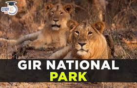

To bring cheetahs back into the Indian wilderness, Kuno National Park, Madhya Pradesh, with a suitable habitat and adequate prey base, was selected by the Central Government. This national park also offers prospects for housing the other three big cats — tiger, lion and leopard — which had coexisted in the past in India.

The proposal deems the attempts made for conserving Asiatic lions in the Gir National Park and Wildlife Sanctuary, Gujarat, a “conservation success story”. Between 2015-20, there was a 29 per cent increase in the number of Asiatic lions found in Gujarat. The proposal calls for a greater involvement of local communities in ensuring both the expansion and the improvement of lion habitats. It states that lions are reaching areas in Gujarat with greater human population and communities unaccustomed to their presence. Mitigating potential human-wildlife conflict is an important objective of Project Lion, the proposal adds.
Lion projuct.3
.jpg)
Lions in Namibia’s northwest, renowned for eking out a living amid the Namib Desert’s harsh gravel plains and endless dunes, have a history of feeding on marine species, such as Cape fur seals, beached whales, and cormorants. Remarkably, they are the only lions known to target marine prey. But in the 1980s, the desert lions abandoned the coast after local farmers wiped out most of the population.